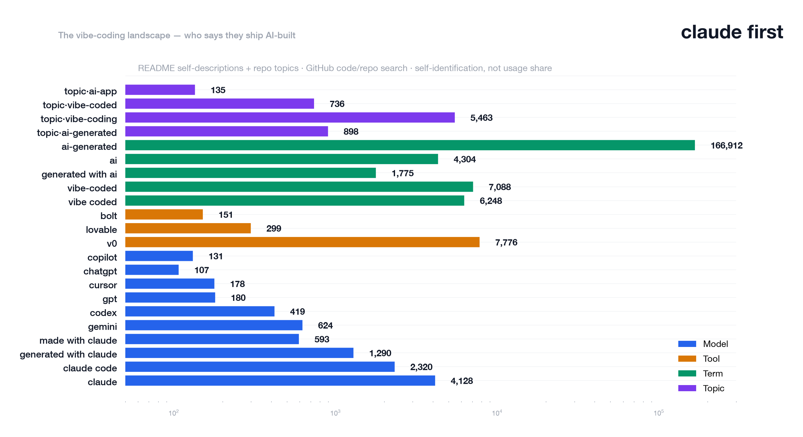
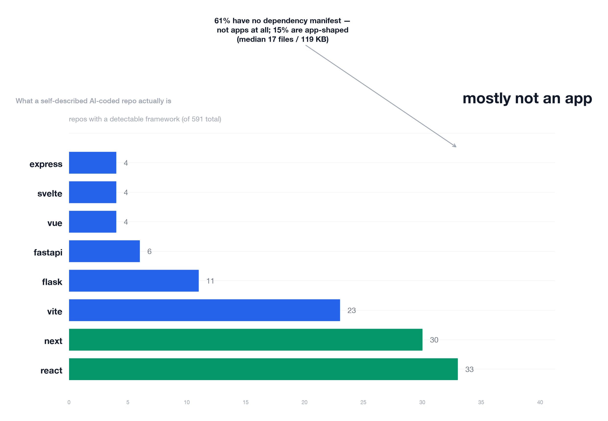

Claude dominates the self-identification the claim is the signal
Every "built with" mention across ChatGPT, GPT, Copilot, and Cursor
combined (596 repos) is less than a sixth of "built with claude"
alone (4,128). Whether or not Claude is the most-used model for
vibe coding, it is the one people say they used.

Honesty: these are self-identification shares, not
usage shares. Claude users advertise their tool choice in READMEs;
GPT and Copilot users mostly don't. The asymmetry of the claims is
itself the finding — and the reason a corpus study can't answer
"which model writes safer code" from self-labeling alone.
The tool layer outnumbers the model layer generators, not models
"built with v0" (7,776) exceeds every model self-description. Vibe
coders name their generator more readily than their model — which
is exactly why Septr's studies compare tools, and why "vibe-coded"
(7,088) and "vibe coded" (6,248) bracket the term's settled
spelling.
"ai-generated" is a firehose, not a signal —
166,912 repos, describing asset pipelines and license notices more
than apps. The corpus program uses the narrower
ai-generated topic (898, the complete enumerable
surface) and README phrase checks instead.
What they're actually made of composition
The counts tell you who's claiming what. But what are the repos
themselves? From the 591-repo AI-coded corpus: 61% have no
dependency manifest at all. Most aren't apps — they're tutorials,
prompt collections, and single-script repos.

The app-shaped slice (91 repos, median 107 files / 2.9 MB) matches
the generator populations in scale — and its security posture is
the fair baseline: 71.4% clean, 7.7% commit .env,
versus Lovable's 50.9% / 27.5%.
Why the landscape matters the implication
The vibe-coding landscape is real and growing — "vibe-coded" has
settled into two spellings across 13,000+ repos. But the market is
also self-selected: most "AI-coded" repos aren't apps, and the ones
that are leak at different rates depending on their generator.
Septr scans the real apps, not the README claims.
The studies behind this landscape page — Lovable, v0, and the
app-shaped baseline — all show the same thing: exposure follows
the generator's workflow, not the AI label on the repo. The
landscape tells you who's out there; the engine tells you what
they ship.